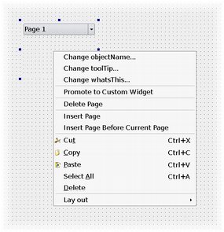

| Home · All Classes · Modules · QSS HELP · QSS 案例 · VER007 HOME |
该QDesignerContainerExtension类可以让你的网页添加到Qt Designer中的工作区中的自定义多页的容器。More...
通过继承QPyDesignerContainerExtension。
该QDesignerContainerExtension类可以让你的网页添加到Qt Designer中的工作区中的自定义多页的容器。
QDesignerContainerExtension用于创建自定义容器扩展提供了一个接口。容器扩展包括函数的集合的那个Qt Designer需要管理一个多页容器插件，且在容器的页的列表。

Warning:这是not在一般情况下，只有自定义容器的插件扩展multi-page容器。
要创建一个容器扩展，你的扩展类必须继承自两个QObject和QDesignerContainerExtension 。例如：
class MyContainerExtension : public QObject, public QDesignerContainerExtension { Q_OBJECT Q_INTERFACES(QDesignerContainerExtension) public: MyContainerExtension(MyCustomWidget *widget, QObject *parent = 0); int count() const; QWidget *widget(int index) const; int currentIndex() const; void setCurrentIndex(int index); void addWidget(QWidget *widget); void insertWidget(int index, QWidget *widget); void remove(int index); private: MyCustomWidget *myWidget; };
由于我们正在实现一个接口，我们必须确保它是由已知的元对象系统中使用Q_INTERFACES（）宏。这使Qt Designer使用qobject_cast（ ）函数用什么来查询所支持的接口，但一QObject指针。
你必须重新实现几个功能，使Qt Designer管理自定义多页的容器控件：Qt Designer uses count（ ）来跟踪的页数在你的容器中，widget（ ）给定的索引在容器的页面列表在返回的页面，currentIndex（ ）返回选定的页面的列表索引。Qt Designer使用addWidget（ ）函数在给定页面添加到容器中，期待它附加到页面列表，而它预计insertWidget（ ）函数通过给定的索引处插入了一个给定页面添加到容器中。
In Qt Designer未创建的扩展，直到你需要它们。出于这个原因，你必须同时创建一个QExtensionFactory，即一个类，它能够让你的扩展的一个实例，并使用它注册Qt Designer的extension manager。
当一个容器扩展是必需的，Qt Designer的extension manager将通过其所有已注册的工厂运行要求QExtensionFactory.createExtension（ ）对每一直到第一个即能创建一个容器延伸，被找到。这家工厂将创建的扩展插件。
有扩展的四个可用的类型Qt Designer： QDesignerContainerExtension ，QDesignerMemberSheetExtension，QDesignerPropertySheetExtension和QDesignerTaskMenuExtension。Qt Designer的行为是一样的具有多页的容器，一个成员表，属性表或任务菜单中的延期申请是否相关。
该QExtensionFactory类提供了一个标准的扩展工厂，并且也可以用作用于定义扩展工厂的接口。您可以创建一个新的QExtensionFactory并重新实现QExtensionFactory.createExtension（）函数。例如：
QObject *ANewExtensionFactory.createExtension(QObject *object, const QString &iid, QObject *parent) const { if (iid != Q_TYPEID(QDesignerContainerExtension)) return 0; if (MyCustomWidget *widget = qobject_cast<MyCustomWidget*> (object)) return new MyContainerExtension(widget, parent); return 0; }
或者您可以使用现有的工厂，扩大QExtensionFactory.createExtension（ ）函数，使工厂能够创建一个容器扩展为好。例如：
QObject *AGeneralExtensionFactory.createExtension(QObject *object, const QString &iid, QObject *parent) const { MyCustomWidget *widget = qobject_cast<MyCustomWidget*>(object); if (widget && (iid == Q_TYPEID(QDesignerTaskMenuExtension))) { return new MyTaskMenuExtension(widget, parent); } else if (widget && (iid == Q_TYPEID(QDesignerContainerExtension))) { return new MyContainerExtension(widget, parent); } else { return 0; } }
对于使用QDesignerContainerExtension类的完整示例，请参见Container Extension example。该示例显示了如何创建一个自定义多页插件Qt Designer。
这种方法是抽象的，应在任何子类中重新实现。
将给定page到容器将其附加到页面的扩展名的列表。
See also insertWidget（ ）remove（）和widget（ ） 。
这种方法是抽象的，应在任何子类中重新实现。
返回容器中的页数。
这种方法是抽象的，应在任何子类中重新实现。
返回容器中的当前选择的页的索引。
See also setCurrentIndex（ ） 。
这种方法是抽象的，应在任何子类中重新实现。
将给定page到容器通过在给定的插入它index在页面的扩展名的列表。
See also addWidget（ ）remove（）和widget（ ） 。
这种方法是抽象的，应在任何子类中重新实现。
移除网页在给定的index从页面的扩展名的列表。
See also addWidget（）和insertWidget（ ） 。
这种方法是抽象的，应在任何子类中重新实现。
设置当前所选页面中的容器是网页在给定的index在页面的扩展名的列表。
See also currentIndex（ ） 。
这种方法是抽象的，应在任何子类中重新实现。
返回页面在给定的index在页面的扩展名的列表。
See also addWidget（）和insertWidget（ ） 。
| PyQt 4.10.3 for X11 | Copyright © Riverbank Computing Ltd and Nokia 2012 | Qt 4.8.5 |